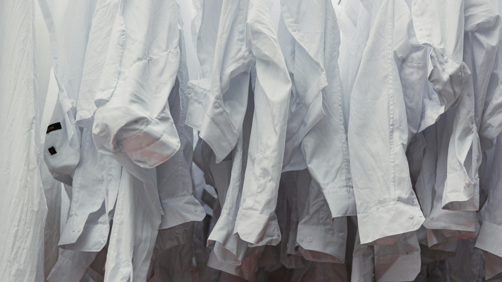

We Built Mr. Quickly
Because Laundry
Deserved Better.
Mr. Quickly started in 2021 in a small space in Tarlac City. Our founder, tired of unreliable laundry shops and mixed-up orders, decided to do things properly, with systems, accountability, and genuine care for every customer's clothes.
What began as a one-machine operation now serves thousands of households across Tarlac and nearby cities, with a team of trained staff and a facility built around cleanliness and quality control.
We're not just a laundry shop. We're a service you can actually trust.

Our Core Values
Order Integrity
We never mix orders. Every bag gets a unique ID and is processed completely separately from start to finish. Your clothes go out with your name on them, always.
Quality First
We do a full quality inspection before every delivery. If anything looks wrong, we fix it before it leaves our hands. No shortcuts, no excuses.
Eco-Conscious
We use biodegradable, hypoallergenic detergents and optimize every wash cycle to reduce water and electricity use. Clean clothes shouldn't cost the earth.
Reliability
We show up on time. Every time. Pickup and delivery windows are honored because your schedule matters as much as your laundry.
Accountability
Something went wrong? We make it right. We're fully insured and take complete responsibility for every item in our care.
Community First
We're a local business built to serve local families. We hire locally, source locally, and give back to the Tarlac community we're proud to be part of.
We Never Mix Orders.
This is our most important promise. Every customer's laundry is tagged, bagged, and processed in complete isolation. When your clothes come back, they come back to you exactly as they left, only cleaner. This isn't just a policy. It's how we built our reputation.
Meet the Team
A small, dedicated team that takes pride in every order we handle.
John Lorenz Dineros
Founder
David Isaiah Daz
Laundry Specialist
Built for Quality.
Our facility is equipped with commercial-grade industrial washers and dryers capable of handling everything from a single t-shirt to a king-size comforter.
We maintain strict cleanliness standards and regularly sanitize all machines between uses. Every item processed in our facility is handled only by trained, trusted staff.
We also have a dedicated dry cleaning station and a professional steam pressing area all under one roof.

Experience the Mr. Quickly difference.
Book your first pickup today and see why thousands of households trust us with their laundry.
Book a Pickup